Cờ Tỷ Phú (Monopoly) Sài Gòn 3D
Bàn cờ 3D 40 ô đường Sài Gòn: mua đất, xây nhà lên Landmark, đấu giá, giao dịch, chơi 2–8 người hoặc theo đội 2 người 🏙️
🎲 Cờ bàn 2–8 ngườiTất cả mọi thứ về GumballZ Boardgame ở một chỗ: 92 game + luật chơi, 1341 thành tựu, 114 danh hiệu, 6 bậc huy hiệu, vật phẩm, tỉ lệ rương Gacha và cách nhận từng món.
Bấm Hướng dẫn để xem luật đầy đủ của từng game, bấm Chơi để vào game ngay. Lọc theo nhóm hoặc gõ tên game vào ô tìm kiếm ở trên.
Bàn cờ 3D 40 ô đường Sài Gòn: mua đất, xây nhà lên Landmark, đấu giá, giao dịch, chơi 2–8 người hoặc theo đội 2 người 🏙️
🎲 Cờ bàn 2–8 ngườiLạc đà 3D cõng nhau chạy loạn – đoán con về nhất bằng xu ảo, ai giàu nhất thắng! 🏜️
🎲 Cờ bàn 2–8 ngườiCờ cá ngựa 3D: đổ đôi xuất chuồng, đá ngựa bạn bay về chuồng, chơi online hoặc với bot 🐴💨
🎲 Cờ bàn 2–4 ngườiĐấu với bạn hoặc với máy 4 mức, có cả Đại sư. Thêm cờ thế để luyện chiếu bí ♟️
🎲 Cờ bàn 1–2 ngườiĐánh bài màu cực cuốn: Cổ điển, Luật rừng cộng dồn, và No Mercy +10 siêu gắt 💀
🃏 Game bài 2–10 người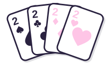
6 lá, 6 vòng: đè hay úp, không ăn vòng nào là chết, ăn vòng cuối là tới! ☠️
🃏 Game bài 2–6 ngườiXì dách kiểu Việt: rút hay dằn, xì bàn, ngũ linh, nhà cái xét bài – chip ảo chơi vui 🃏
🃏 Game bài 2–8 người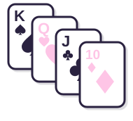
Xếp bài cổ điển như Solitaire Windows: rút 1/3, điểm Vegas, gợi ý, bài nảy khi thắng 🃏
🃏 Game bài 1 ngườiĐấu súng Viễn Tây: Cảnh sát trưởng, Phó cảnh sát, Tội phạm và Kẻ hai mặt – ai sẽ trụ lại?
🎉 Tụ tập 4–7 ngườiVẽ bậy – đoán bừa: Đoán hình kiểu skribbl và Tam sao thất bản kiểu Gartic Phone 😂
🎉 Tụ tập 2–12 ngườiBốc bài hồi hộp: né Mèo Nổ, gỡ bom rồi nhét lại cho đứa khác, hô KHÔNG! đúng lúc 💥
🎉 Tụ tập 2–8 ngườiChúa công, Trung thần, Phản tặc, Nội gián – 25 võ tướng Ngụy Thục Ngô Quần, Sát – Né – Đào ⚔️
🎉 Tụ tập 2–8 ngườiLàng quê đêm trăng: Sói, Tiên tri, Bảo vệ, Phù thủy, Thợ săn, Cupid… máy làm quản trò, ai cũng dùng điện thoại riêng 🌕
🎉 Tụ tập 5–16 người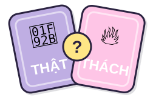
14 chủ đề, gần 270 câu Thật – Thách lành mạnh cho hội bạn, lớp học, công ty 🎯
🎉 Tụ tập 2–12 ngườiTú lơ khơ tấn – đỡ bằng lá chủ: ai ôm bài cuối cùng là thua. Có chéo cánh 2 đấu 2 😈
🃏 Game bài 2–6 ngườiLô tô hội chợ: vé 9 hàng như vé giấy, máy rao số, đủ 5 số một hàng thì hô KINH! 🎪
🎉 Tụ tập 1–16 ngườiĐấu với bạn hoặc với máy 3 mức, có cờ thế, gợi ý nước đi và thanh đánh giá bật tắt được ♟️
🎲 Cờ bàn 1–2 ngườiPhỏm miền Bắc: ăn cây, hạ phỏm, gửi bài, canh ù – ai ít điểm nhất thì thắng 🀄
🃏 Game bài 2–4 người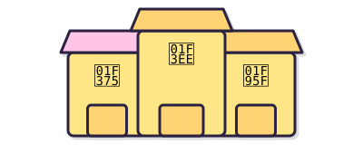
Game mặc cả mở tiệm: đổi đất, đổi biển hiệu, trả giá tới bến – gom tiệm liền nhau là hốt bạc 🏮
🎲 Cờ bàn 3–5 người112 lá bốn màu, bảy quân cờ tướng: ăn đôi, khui khạp, đếm lệnh rồi tới – luật Nam 🀄
🃏 Game bài 2–4 ngườiBắn tàu 10×10: xếp 5 tàu, bắn trúng được bắn tiếp, dùng Bẫy, Radar và Bom hạt nhân bằng xu trong trận! 💥
🎲 Cờ bàn 1–2 người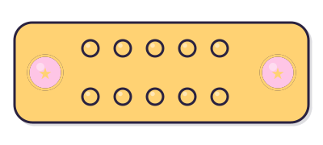
Rải quân, ăn dây, cứu dân, ăn Quan — trò dân gian Việt Nam trên bàn gỗ, đấu với máy, 2 người chung máy hoặc online với bạn! 🪀
🎲 Cờ bàn 1–2 người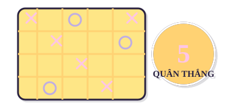
Bàn lớn 30×30: xếp 5 quân X/O liên tiếp là thắng — không phải cờ 3×3! Giữ và trượt để xem bàn, đấu máy hoặc online với bạn! ✖️
🎲 Cờ bàn 1–2 ngườiBàn 3×3: xếp 3 quân X/O liên tiếp là thắng — KHÁC hẳn Cờ Caro bàn 30×30! Nhanh, gọn, đấu máy minimax hoặc online với bạn! ❌
🎲 Cờ bàn 1–2 ngườiLật thẻ tìm cặp giống nhau: trúng cặp được lật tiếp, trượt thì úp lại! 3 mức khó 12/16/24 lá, chơi đơn, đấu máy hoặc online với bạn! 🃏
🃏 Game bài 1–2 người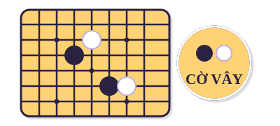
Bàn gỗ 9×9 / 13×13 / 19×19: đặt quân vào giao điểm, bao hết khí thì ăn quân, cấm tự sát và cấm ko, tính điểm kiểu Trung Quốc! Đấu máy, 2 người hoặc online với bạn! ⚫
🎲 Cờ bàn 2 người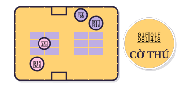
Bàn rừng 7×9 ô: 8 con vật hạng 1–8, Chuột ăn được Voi, chỉ Chuột qua được sông, Hổ và Sư tử nhảy qua sông, bẫy làm quân địch yếu hẳn, vào hang địch là thắng ngay! Đấu máy, 2 người hoặc online với bạn! 🦁
🎲 Cờ bàn 2 ngườiBàn 100 ô: tung xúc xắc đi tiến, leo thang lên cao, trượt rắn xuống thấp, về đúng ô 100 mới thắng, tung được 6 thì tung tiếp! Chơi online 2 người, đấu máy hoặc 2–4 người chung 1 máy! 🐍
🎲 Cờ bàn 2–4 người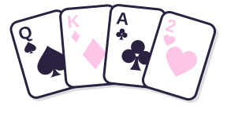
10 lá mỗi người: sảnh, đôi, sám cô, tứ quý chặt 2 – dám thì báo Sâm ăn cả làng 🔥
🃏 Game bài 2–5 ngườiXưng vai, bịp, nghi nhau – Công tước hay kẻ nói dối? Giữ 2 lá tới cuối là lên ngôi 👑
🃏 Game bài 2–6 ngườiMỗi đêm lật 6 con thú lên sân khấu, gom danh tiếng, thuê thú hay – gánh nào nổi nhất? 🎪
🃏 Game bài 2–5 ngườiChơi chung cả bàn: chặn lũ, bão, cháy rừng, hạn mặn khắp Việt Nam trước khi vỡ đê 🚁
🎲 Cờ bàn 2–4 người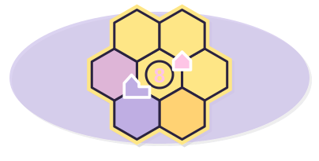
Dựng làng, làm đường, đổ xúc xắc lấy tài nguyên và đổi chác với bạn bè – coi chừng tên cướp 🏝️
🎲 Cờ bàn 2–4 ngườiGom thẻ toa, xây đường sắt nối 28 thành phố từ Lào Cai tới Cà Mau, giành tuyến trước bạn bè 🚂
🎲 Cờ bàn 2–5 người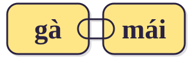
Gà mái → mái nhà → nhà cửa… ai bí trước thì thua! Gần 40.000 từ, đấu bạn qua link hoặc đấu máy 🔗
✨ Kiểu khác 2–8 ngườiBầu cua tôm cá ngày Tết: cả hội cùng đặt xu ảo, lắc 3 xúc xắc – ra con nào trúng con đó 🎲
✨ Kiểu khác 1–8 ngườiMỗi người 1 từ bí mật, mô tả 1 câu rồi bỏ phiếu tìm gián điệp — ai nói lệch là lộ ngay! 🕵️
🎉 Tụ tập 4–12 người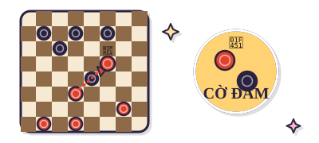
Nhảy ăn quân, ăn là bắt buộc, phong Vua lên hàng cuối — cờ Đam kinh điển 2 người! 🔴⚫
🎲 Cờ bàn 2 người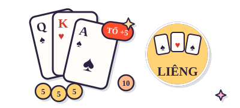
3 lá, Sáp to nhất — góp gà rồi cược 1 vòng Tố/Theo/Bỏ, bài to nhất hốt gà! 🃏💰
🃏 Game bài 2–6 người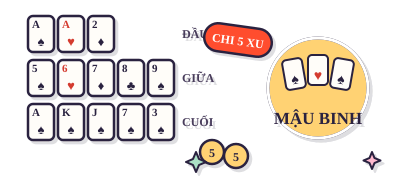
13 lá xếp 3 chi, chi sau phải mạnh hơn chi trước — lủng là thua sạch, đặc biệt là ăn luôn! 🀄💰
🃏 Game bài 2–4 người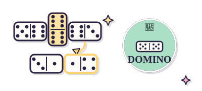
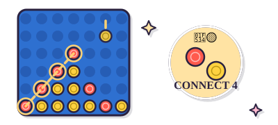
Thả quân vào cột, xếp 4 quân liên tiếp là thắng — chặn nước thắng của đối thủ mới là cao thủ! 🔴🟡
🎲 Cờ bàn 2 người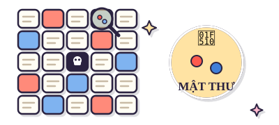
Mật vụ ra gợi ý 1 từ + số, điệp viên đoán lá — lộ hết điệp viên phe mình trước thì thắng, chạm sát thủ là thua ngay! 🔐💀
🎉 Tụ tập 2–8 ngườiSuy luận phe phái: Merlin giấu mặt, Sát thủ rình ám sát — làm đủ 3 nhiệm vụ trước khi phe Ác phá hỏng! 🛡️🗡️
🎉 Tụ tập 5–10 ngườiCả bàn cùng 1 địa điểm, chỉ 1 gián điệp không biết chỗ — hỏi khéo, đừng lộ, bắt đúng gián điệp trước khi nó đoán ra nơi này! 🕵️📍
🎉 Tụ tập 3–8 người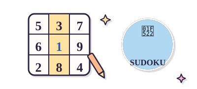
Điền số 1–9 vào lưới 9×9: mỗi hàng, cột và khối 3×3 đủ 1–9 — sai 3 lần là thua! Chơi đơn, đua máy hoặc đua bạn online cùng 1 câu đố 🔢🧩
✨ Kiểu khác 1–4 ngườiĐoán từ tiếng Việt 5 chữ cái trong 6 lượt: xanh là đúng chỗ, vàng là sai chỗ, xám là không có! Chơi đơn, đua máy hoặc đua bạn online cùng 1 từ 🟩🟨⬜
✨ Kiểu khác 1–4 ngườiMở hết ô an toàn mà không chạm mìn: số cho biết có bao nhiêu mìn kề bên — cắm cờ đánh dấu mìn nghi ngờ! Chơi đơn, đua máy hoặc đua bạn online cùng 1 bãi mìn 💣🚩
✨ Kiểu khác 1–4 người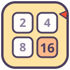
Trượt các ô số để gộp lại: 2+2 thành 4, 4+4 thành 8 — dồn tới ô 2048 là thắng! Chơi đơn, đua máy hoặc đua bạn online cùng 1 dãy ô mọc 2️⃣🧩
✨ Kiểu khác 1–4 ngườiGỡ cặp quân giống nhau trên bàn Rùa 144 quân: quân trống là quân không bị đè và hở ít nhất 1 bên — gỡ hết bàn là thắng! Chơi đơn, đua máy hoặc đua bạn online 🀄🧩
✨ Kiểu khác 1–4 người16 lá bài, đoán lá và loại nhau: giữ Công chúa tới cuối, gom đủ dấu Yêu là thắng! Chơi đơn, đấu máy hoặc online 💌
🃏 Game bài 2–4 ngườiChọn món, chuyền tay, gom bộ: Tempura đôi, Sashimi ba, Maki nhiều nhất, Pudding quyết định — ai nhiều điểm nhất thắng! Chơi đơn, đấu máy hoặc online 🍣
🃏 Game bài 2–5 người104 lá, 4 dãy, lá thứ 6 là ôm: chọn lá cùng lúc, đặt theo thứ tự tăng dần, tránh lấy dãy đầy đầu bò — ít đầu bò nhất thắng! Chơi đơn, đấu máy hoặc online 🐂
🃏 Game bài 2–10 ngườiĐào đường tìm vàng hay lén phá hoại? Lát đường, sửa dụng cụ, soi bản đồ — ai nhiều vàng nhất sau 3 vòng thì thắng! Chơi đơn, đấu máy hoặc online ⛏️
🃏 Game bài 3–10 ngườiÚp đĩa, đấu giá, lật bài — hoa hồng thì được điểm, đầu lâu thì mất đĩa! Bluff hay không bluff, 2 điểm là thắng. Chơi đơn, đấu máy hoặc online 💀
🃏 Game bài 3–6 ngườiCùng nhau bắn pháo hoa! Bạn không thấy bài mình — chỉ thấy bài người khác. Gợi ý đúng lúc, đánh đúng thứ tự, đừng để hết ngòi nổ! Chơi đơn, đấu máy hoặc online 🎆
🃏 Game bài 2–5 ngườiBài Chắn truyền thống: xếp chắn, cạ, ăn, chíu rồi ù! Bộ 100 lá, 6 chắn + 4 cạ là ù, thập thành thì oách. Chơi đơn, đấu máy hoặc online 🀄
🃏 Game bài 2–4 ngườiBài Tổ Tôm truyền thống: bộ 120 lá, xếp phu dọc, phu bí, phu yêu rồi ù! Cần ít nhất 1 lưng, có tôm, lèo, thập điều, bạch định. Chơi đơn, đấu máy hoặc online 👴
🃏 Game bài 4–5 ngườiXếp 72 ô đất thành thành phố, đường, tu viện và ruộng rồi đặt người của mình lên đó! Thành phố 2 điểm/ô + khiên, tu viện 9 điểm, ruộng 3 điểm/thành phố. Chơi đơn, đấu máy hoặc online 🏰
🎲 Cờ bàn 2–5 ngườiLấy gạch đủ màu từ các xưởng, xếp vào hàng mẫu rồi ốp lên tường! Gạch kề nhau càng nhiều điểm càng cao, đủ 1 hàng ngang là kết thúc, thưởng thêm hàng dọc và đủ màu. Chơi đơn, đấu máy hoặc online 🎨
🎲 Cờ bàn 2–4 ngườiThu thập đá quý, mua thẻ phát triển để có giảm giá vĩnh viễn rồi đón quý tộc về! Ai đạt 15 điểm trước thì thắng — tính toán từng viên đá, từng lượt lấy. Chơi đơn, đấu máy hoặc online 💎
🎲 Cờ bàn 2–4 ngườiNhảy bi qua đầu nhau trên bàn sao 6 cánh, chuyền dài cả chục ô một lượt! Đưa cả 10 bi về nhà đích trước tiên là thắng — tính đường nhảy, đừng để bi lạc. Chơi đơn, đấu máy hoặc online ⭐
🎲 Cờ bàn 2–6 ngườiGieo xúc xắc, đua 15 quân về sân nhà rồi ra quân trước đối thủ! Đánh trúng blot thì đối thủ phải vào lại từ vạch — nhớ cube gấp đôi, thắng Gammon nhân đôi, Backgammon nhân ba. Chơi đơn, đấu máy hoặc online 🎲
🎲 Cờ bàn 2 người106 lá số, xếp dãy cùng màu và nhóm cùng số, mở bài lần đầu cần 30 điểm rồi thao tác thoải mái trên bàn — ai hết bài trên tay trước thì thắng! Chơi đơn, đấu máy hoặc online 🧩
🎲 Cờ bàn 2–4 ngườiĐua quân tới đích đối diện trên bàn 9×9, đặt tường chặn đường đối thủ — nhưng đừng chặn kín hết đường đi! Nhảy qua quân kề, tính đường BFS mà chạy. Chơi đơn, đấu máy hoặc online 🧱
🎲 Cờ bàn 2–4 ngườiXếp 21 mảnh polyomino lên bàn 20×20 — mảnh sau phải chạm chéo góc mảnh cùng màu, không được chạm cạnh! Ai còn ít ô trống nhất thì thắng. Chơi đơn, đấu máy hoặc online 🟦
🎲 Cờ bàn 2–4 ngườiXếp chữ tạo từ trên bàn 15×15 — ô thưởng nhân chữ, nhân từ, dùng hết 7 chữ được Bingo +50! Chơi đơn, đấu máy hoặc online 🔤
🎲 Cờ bàn 2–4 ngườiĐoán mã bí mật 4 chốt — đen là đúng chỗ, trắng là đúng màu! Đấu trí song song, ai đoán ra trước thì thắng 🧠
🎲 Cờ bàn 2 ngườiTrả lời 15 câu hỏi leo thang tiền thưởng tới 150 triệu — 50:50, gọi điện, hỏi khán giả, đổi câu hỏi! Chơi đơn, đua máy hoặc đua bạn 💰
🎉 Tụ tập 1–2 ngườiKể 2 điều thật, 1 điều giả về mình — ai đoán trúng câu giả thì được điểm, ai lừa được cả bàn thì càng được nhiều! Chơi đơn, đấu máy hoặc cùng bạn 🤥
🎉 Tụ tập 1–6 ngườiMột người diễn bằng hành động, cả bàn đoán từ trong 60 giây — đoán đúng +10 điểm, diễn viên được +5! Chơi đơn, đấu máy hoặc cùng bạn 🎭
🎉 Tụ tập 1–6 ngườiNhà ngoại cảm đưa 1 gợi ý cho vị trí bí mật trên thang đo 2 đầu đối lập — cả bàn đặt mốc, càng sát đích càng nhiều điểm! Chơi đơn, đấu máy hoặc cùng bạn 🌈
🎉 Tụ tập 1–6 người5–10 người, gián điệp trà trộn trong phe Kháng chiến — đề cử đội, bỏ phiếu, làm nhiệm vụ, tìm ra kẻ phản bội trước khi quá muộn! Chơi đơn, đấu máy hoặc cùng bạn 🕶️
🎉 Tụ tập 1–10 ngườiVẽ từ bí mật rồi chuyền tay — người sau đoán tranh, người sau nữa vẽ lại lời đoán, xem từ biến dạng ra sao sau cả vòng! Chơi đơn, đấu máy, online hoặc chuyền tay 🖌️
🎉 Tụ tập 1–8 ngườiXếp gạch rơi thành hàng ngang — 7 khối, giữ khối, xem trước, tốc độ tăng dần! Chơi đơn xoá 100 hàng, đua 40 hàng với máy hoặc bạn bè 🟪
✨ Kiểu khác 1–4 ngườiRắn cổ điển — ăn mồi dài ra, đừng đâm tường hay tự cắn mình! Chơi đơn dài 20, đua dài 15 với máy hoặc bạn bè 🍎
✨ Kiểu khác 1–4 ngườiĐổi chỗ 2 kẹo kề nhau để tạo hàng 3+, nổ tung lấy điểm, dây chuyền nhân điểm! Chơi đơn 30 lượt đạt 10000 điểm, đua với máy hoặc bạn bè 🍬
✨ Kiểu khác 1–4 ngườiĐỡ bóng bằng vợt, phá sạch 60 viên gạch — gạch cứng phải đập 2 lần! Chơi đơn 3 mạng, đua phá gạch với máy hoặc bạn bè 🏓
✨ Kiểu khác 1–4 người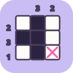
Tô ô đen theo số gợi ý để lộ ra bức tranh — tô sai mất mạng! Bảng 5×5, 10×10 hoặc 15×15, đua tô tranh với máy hoặc bạn bè ⬛
✨ Kiểu khác 1–4 ngườiĐổi chỗ các mảnh tranh xáo trộn để ghép lại bức tranh — đúng 1 mảnh được 10 điểm, đúng cả 2 được 20! Bảng 3×3, 4×4 hoặc 5×5, đua ghép với máy hoặc bạn bè 🖼️
✨ Kiểu khác 1–4 ngườiXếp bài nhện kinh điển — xếp dãy K→A cùng chất để thu bài! 1, 2 hoặc 4 chất, 104 lá, đua thu dãy với máy hoặc bạn bè 🕷️
✨ Kiểu khác 1–4 ngườiBida lỗ 8 bi chuẩn — ngắm, kéo cơ rồi thả tay để bắn! Phá bi, chia trơn/sọc, vào bi 8 cuối là thắng 🎱
✨ Kiểu khác 1–2 ngườiSút luân lưu 3×3 — chọn góc sút, thủ môn đoán ô để cản phá! Đấu 5 vòng + luân lưu, chơi đơn 10 cú ⚽
✨ Kiểu khác 1–2 người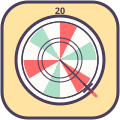
Ném phi tiêu 501 — về 0 bằng double mới thắng! Treble 20, bull 50, chơi đơn 30 phi 🎯
✨ Kiểu khác 1–2 ngườiOẳn tù tì giấu tay — lật bài cùng lúc! Best-of-5, thắng 3 vòng trước, đấu máy hoặc 2 người ✌️
✨ Kiểu khác 1–2 ngườiQuiz gameshow 1.027 câu — cả phòng cùng trả lời, nhanh tay được thưởng, chuỗi đúng càng dài càng nhiều điểm ❓
✨ Kiểu khác 1–16 ngườiLập đội anh hùng thú cưng, tung xúc xắc, Thách nhau và diệt quái — hội nào săn giỏi nhất? 🐾
🃏 Game bài 2–6 ngườiKhung avatar, màu tên, banner hồ sơ, lưng bài — mua bằng xu, mở rương, cày thành tích hoặc đứng top bảng xếp hạng. Quản trị viên có thể cấp tay hầu hết vật phẩm (trừ món riêng Chủ web và món VIP thang top).
| Khung | Cách nhận |
|---|---|
| Gỗ | Chơi 10 ván |
| Lá non | Chơi vào 7 ngày khác nhau |
| Bạc | Thắng 10 ván |
| Đêm sao | Chơi xong một ván lúc nửa đêm |
| Lửa | Thắng 5 ván liên tiếp |
| Cầu vồng | Chơi 10 game khác nhau |
| Vàng | Thắng 50 ván |
| Tím huyền bí | Lọt top 10 bảng xếp hạng (cần đăng nhập) |
| Kim cương | Thắng 200 ván |
| Chủ web | Riêng Chủ web |
| Khung San Hô | Mua ở Cửa hàng: 150 xu |
| Khung Rừng Xanh | Mua ở Cửa hàng: 200 xu |
| Khung Bạc Hà | Mua ở Cửa hàng: 150 xu |
| Khung Tím Mộng | Mua ở Cửa hàng: 250 xu |
| Khung Bong Bóng | Chỉ mở ra từ rương Gacha |
| Khung Sao Băng | Chỉ mở ra từ rương Gacha |
| Khung Mật Ngọt | Chỉ mở ra từ rương Gacha |
| Khung Hoàng Gia | Chỉ mở ra từ rương Gacha |
| Khung Anh Đào | Mua ở Cửa hàng: 200 xu |
| Khung Sao Xanh | Mua ở Cửa hàng: 200 xu |
| Khung Biển Xanh | Mua ở Cửa hàng: 150 xu |
| Khung Hoàng Hôn | Mua ở Cửa hàng: 250 xu |
| Khung Mặt Trăng | Mua ở Cửa hàng: 200 xu |
| Khung Rừng Thông | Mua ở Cửa hàng: 150 xu |
| Khung Cam Vàng | Mua ở Cửa hàng: 150 xu |
| Khung Tím Sen | Mua ở Cửa hàng: 200 xu |
| Khung Cầu Vồng Xoay động | Chỉ mở ra từ rương Gacha (động, cực hiếm) |
| Khung Lửa Cháy động | Chỉ mở ra từ rương Gacha (động, cực hiếm) |
| Khung Vàng Xoay động | Chỉ mở ra từ rương Gacha (động, cực hiếm) |
| Khung Vương Miện động | Chỉ mở ra từ rương Gacha (động, cực hiếm) |
| Khung Rồng Bay Phụng Múa động | Chỉ mở ra từ rương Gacha (động, cực hiếm) |
| Khung Vua Trò Chơi động | Chỉ mở ra từ rương Gacha (động, cực hiếm) |
| Khung Ngôi Sao | 🏆 Thang VIP: Top 10 liên tục 7 ngày |
| Khung Vương Giả | 🏆 Thang VIP: Top 3 liên tục 14 ngày |
| Khung Huyền Thoại động | 🏆 Thang VIP: Top 1 liên tục 30 ngày |
| Đá cuội | Chơi vào 3 ngày khác nhau |
| Đồng | Chơi 1 ván |
| Giấy kraft | Thắng 1 ván |
| Mây trắng | Chơi 3 game khác nhau |
| Hồng phấn | Chơi 10 ván |
| Cam đào | Chơi 20 ván |
| Mộng Tím | Chơi 5 game khác nhau |
| Xanh Ngọc | Chơi 20 ván |
| Vàng đồng | Thắng 25 ván |
| Lửa Nhỏ | Thắng 5 ván liên tiếp |
| Anh Đào Nhẹ | Chơi vào 14 ngày khác nhau |
| Sóng Xanh | Thắng 30 ván |
| Trái Tim | Chơi 50 ván |
| Bàn Cờ | Thắng 10 ván cờ (Cờ Vua + Cờ Tướng) |
| Bài Tây | Thắng 20 ván game bài |
| Băng Giá | Thắng 60 ván |
| Đom Đóm | Chơi xong một ván lúc nửa đêm |
| Mèo Nổ | Thắng 30 ván Mèo Nổ |
| Ma Sói | Thắng 20 ván Ma Sói |
| Đua Lạc Đà | Thắng 10 ván Đua Lạc Đà |
| Tỷ Phú | Thắng 5 ván Cờ Tỷ Phú |
| Anh Đào Bay | Chơi vào 30 ngày khác nhau |
| Hải Dương | Thắng 80 ván |
| Thần Sấm | Thắng 8 ván liên tiếp |
| Neon Cyber | Mua ở Cửa hàng: 500 xu |
| Nhạc Hội | Chơi 25 game khác nhau |
| Thanh Long Bay động | Thắng 300 ván |
| Xích Long Bay động | Thắng 400 ván |
| Băng Long Bay động | Thắng 500 ván |
| Phượng Hoàng | Lọt top 10 bảng xếp hạng (cần đăng nhập) |
| Thiên Thần | Top 5 bảng xếp hạng |
| Vũ Trụ | Thắng 700 ván |
| Tết Việt | Chỉ mở trong dịp sự kiện (Quản trị cấp tay) |
| Song Long Tranh Châu động | Thắng 1000 ván |
| Tam Long Hội động | Thắng 1500 ván |
| Long Thiên Hà động | 🏆 Thang VIP: Top 1 liên tục 30 ngày |
| Phượng Long Hội động | Top 3 bảng xếp hạng |
| Chủ Sảnh Tối Thượng động | Riêng Chủ web |
| Thanh Long động | Thắng 800 ván |
| Xích Long động | Thắng 1000 ván |
| Băng Long động | Chỉ mở trong dịp sự kiện (Quản trị cấp tay) |
| Vườn Hoa | Chơi vào 30 ngày khác nhau |
| Halloween | Chỉ mở trong dịp sự kiện (Quản trị cấp tay) |
| Giáng Sinh | Chỉ mở trong dịp sự kiện (Quản trị cấp tay) |
| Sấm Sét | Thắng 100 ván |
| Rồng Lửa động | Thắng 300 ván |
| Thiên Hà | Thắng 500 ván |
| Màu tên | Cách nhận |
|---|---|
| AaCam | Chơi 10 ván |
| AaXanh biển | Chơi vào 7 ngày khác nhau |
| AaXanh lá | Chơi 10 game khác nhau |
| AaTím | Thắng 10 ván |
| AaHồng | Chơi 50 ván |
| AaVàng kim | Thắng 50 ván |
| AaLửa | Thắng 10 ván liên tiếp |
| AaChủ web | Riêng Chủ web |
| AaCầu vồng | Chơi 20 game khác nhau |
| AaXanh Ngọc | Mua ở Cửa hàng: 150 xu |
| AaĐỏ Đô | Mua ở Cửa hàng: 150 xu |
| AaVàng Chanh | Mua ở Cửa hàng: 200 xu |
| AaSóng Biển | Chỉ mở ra từ rương Gacha |
| AaDạ Quang | Chỉ mở ra từ rương Gacha |
| AaHồng Sẫm | Mua ở Cửa hàng: 150 xu |
| AaCam Cháy | Mua ở Cửa hàng: 150 xu |
| AaXanh Rêu | Mua ở Cửa hàng: 150 xu |
| AaXanh Dương | Mua ở Cửa hàng: 150 xu |
| AaXanh Chàm | Mua ở Cửa hàng: 150 xu |
| AaNâu Đất | Mua ở Cửa hàng: 150 xu |
| AaXám Đá | Mua ở Cửa hàng: 150 xu |
| AaVàng Mơ | Mua ở Cửa hàng: 200 xu |
| AaXanh Lục | Mua ở Cửa hàng: 150 xu |
| AaĐỏ Tươi | Mua ở Cửa hàng: 150 xu |
| AaCầu Vồng Chạy động | Chỉ mở ra từ rương Gacha (động, cực hiếm) |
| AaVàng Lấp Lánh động | Chỉ mở ra từ rương Gacha (động, cực hiếm) |
| AaTím Xanh Chạy động | Chỉ mở ra từ rương Gacha (động, cực hiếm) |
| AaMàu Hoàng Gia | 🏆 Thang VIP: Top 5 liên tục 10 ngày |
| AaMàu Cực Quang động | 🏆 Thang VIP: Top 2 liên tục 21 ngày |
| Banner | Cách nhận |
|---|---|
| Hoàng Hôn | Mua ở Cửa hàng: 200 xu |
| Biển Xanh | Mua ở Cửa hàng: 200 xu |
| Sao Đêm | Mua ở Cửa hàng: 200 xu |
| Cầu Vồng Chạy động | Chỉ mở ra từ rương Gacha (động, cực hiếm) |
| Vàng Chảy động | Chỉ mở ra từ rương Gacha (động, cực hiếm) |
| Kem sữa | — |
| Xám khói | — |
| Trời xanh | Chơi vào 3 ngày khác nhau |
| Hồng phấn | Chơi 10 ván |
| Chấm bi động | Thắng 1 ván |
| Sọc tím động | Chơi 5 game khác nhau |
| Lá xanh động | Chơi vào 7 ngày khác nhau |
| Nắng vàng động | Chơi 20 ván |
| Bình minh động | Chơi vào 3 ngày khác nhau |
| Đêm sao động | Chơi xong một ván lúc nửa đêm |
| Rừng thông động | Chơi 15 game khác nhau |
| Sa mạc động | Thắng 10 ván Đua Lạc Đà |
| Mưa nhẹ động | Chơi 20 ván |
| Đồng hoa động | Chơi 50 ván |
| Phố đêm động | Chơi vào 30 ngày khác nhau |
| Tuyết rơi động | Chỉ mở trong dịp sự kiện (Quản trị cấp tay) |
| Anh Đào động | Chơi vào 45 ngày khác nhau |
| Sấm Chớp động | Thắng 8 ván liên tiếp |
| Neon Cyber động | Mua ở Cửa hàng: 500 xu |
| Vũ Trụ động | Thắng 100 ván |
| Đại Dương Sâu động | Thắng 80 ván |
| Halloween động | Chỉ mở trong dịp sự kiện (Quản trị cấp tay) |
| Giáng Sinh động | Chỉ mở trong dịp sự kiện (Quản trị cấp tay) |
| Nhạc Hội động | Chơi 25 game khác nhau |
| Synthwave động | Thắng 100 ván |
| Rừng Ma Sói động | Thắng 20 ván Ma Sói |
| Cực Quang động | Chơi vào 30 ngày khác nhau |
| Núi Lửa động | Thắng 300 ván |
| Băng Huyền Ảo động | Thắng 350 ván |
| Thanh Long Bay động | Thắng 400 ván |
| Xích Long Lửa động | Thắng 500 ván |
| Phượng Hoàng động | Lọt top 10 bảng xếp hạng (cần đăng nhập) |
| Tết Việt động | Chỉ mở trong dịp sự kiện (Quản trị cấp tay) |
| Cung Điện Vàng động | Top 5 bảng xếp hạng |
| Song Long Tranh Châu động | Thắng 1000 ván |
| Tam Long Hội động | Thắng 1500 ván |
| Long Thiên Hà động | 🏆 Thang VIP: Top 1 liên tục 30 ngày |
| Thần Sấm Cửu Thiên động | Thắng 1200 ván |
| Phượng Long Hội động | Top 3 bảng xếp hạng |
| Chủ Sảnh Tối Thượng động | Riêng Chủ web |
| Kawaii Pastel động | Chơi 20 ván |
| Học Viện Anh Đào động | Chơi vào 10 ngày khác nhau |
| Lễ Hội Matsuri động | Chỉ mở trong dịp sự kiện (Quản trị cấp tay) |
| Tàu Điện Mưa động | Chơi vào 30 ngày khác nhau |
| Ninja Đêm Trăng động | Thắng 60 ván |
| Samurai Kiếm Nguyệt động | Thắng 120 ván |
| Mecha Thành Phố động | Mua ở Cửa hàng: 800 xu |
| Ma Pháp Thiếu Nữ động | Chơi 200 ván |
| Đảo Bay Isekai động | Thắng 400 ván |
| Cửu Vĩ Hồ Torii động | Thắng 250 ván và 30 ván Ma Sói |
| Idol Sân Khấu động | Chơi 50 game khác nhau |
| Dạ Hành Yêu Quái động | Thắng 500 ván |
| Đại Chiến Rồng Anime động | Thắng 1500 ván |
| Rồng Bay động | Thắng 1200 ván |
| Lưng bài | Cách nhận |
|---|---|
| 🂠Hồng Phấn | Mua ở Cửa hàng: true xu |
| 🂠Lục Bảo Đậm | Mua ở Cửa hàng: true xu |
| 🂠Tím Biếc | Chỉ mở ra từ rương Gacha |
| 🂠Vàng Chanh | Chỉ mở ra từ rương Gacha |
| Hiệu ứng | Cách mở |
|---|---|
| 🎉 Pháo giấy | Mặc định |
| ⭐ Mưa sao | Thắng 10 ván |
| 💖 Tim bay | Chơi vào 7 ngày khác nhau |
| 🪙 Mưa xu | Thắng 5 ván liên tiếp |
| 🎆 Pháo hoa | Thắng 50 ván |
| 🚫 Tắt hiệu ứng | Luôn có sẵn |
| Vật phẩm | Giá | Dùng để làm gì |
|---|---|---|
| 🪤 Bẫy Bắn Tàu | 30 xu | Đặt 1 bẫy lên tàu của bạn trong Bắn Tàu (dùng trong trận, tối đa 2 bẫy/trận). Mua ở đây rồi vào trận bấm “Dùng kho” là có ngay, không tốn xu trong trận. |
| 📡 Radar Bắn Tàu | 40 xu | Quét vùng 3×3 tìm tàu địch trong Bắn Tàu (dùng trong trận, tối đa 1 lần/trận). Mua ở đây rồi vào trận bấm “Dùng kho”. |
| ☢️ Bom hạt nhân Bắn Tàu | 50 xu | Nổ vùng 3×3 trong Bắn Tàu (dùng trong trận, tối đa 1 lần/trận). Mua ở đây rồi vào trận bấm “Dùng kho”. |
| ⭐ Nhân đôi xu | 30 xu | Ván thắng tiếp theo được nhân đôi phần thắng: +20 xu thay vì +10 (cộng thêm +2 xu chơi ván đó, tổng +22). Dùng tối đa 1 lần/ván, cộng dồn được nhiều lần. |
Điểm kinh nghiệm = số ván × 10 + số ván thắng × 20. Mỗi mốc mở 1 món của nhân vật.
| Mốc | Món mở | Cần |
|---|---|---|
| Mốc 1 | 🎩 Nón · Mũ len | 30 XP |
| Mốc 2 | 👕 Trang phục · Áo hoodie | 62 XP |
| Mốc 3 | 🎒 Phụ kiện · Trà sữa | 99 XP |
| Mốc 4 | 💇 Tóc · Tóc bob | 140 XP |
| Mốc 5 | 🎩 Nón · Bờm tai mèo | 185 XP |
| Mốc 6 | 👕 Trang phục · Áo len | 235 XP |
| Mốc 7 | 🎒 Phụ kiện · Kính cận | 289 XP |
| Mốc 8 | 🐾 Nhân vật · Thỏ | 348 XP |
| Mốc 9 | 👕 Trang phục · Đồ ngủ | 411 XP |
| Mốc 10 | 🎩 Nón · Kẹp hoa | 478 XP |
| Mốc 11 | 🎒 Phụ kiện · Nơ cổ | 550 XP |
| Mốc 12 | 💇 Tóc · Hai bím | 626 XP |
| Mốc 13 | 👕 Trang phục · Đồng phục | 707 XP |
| Mốc 14 | 🎒 Phụ kiện · Lồng đèn trung thu | 792 XP |
| Mốc 15 | 🎩 Nón · Mũ nồi | 881 XP |
| Mốc 16 | 👕 Trang phục · Quần yếm | 975 XP |
| Mốc 17 | 🐾 Nhân vật · Gấu | 1073 XP |
| Mốc 18 | 🎒 Phụ kiện · Khẩu trang | 1176 XP |
| Mốc 19 | 👕 Trang phục · Áo mưa | 1283 XP |
| Mốc 20 | 🎩 Nón · Mũ sinh nhật | 1394 XP |
| Mốc 21 | 💇 Tóc · Tóc xoăn | 1510 XP |
| Mốc 22 | 👕 Trang phục · Áo bà ba | 1630 XP |
| Mốc 23 | 🎒 Phụ kiện · Bong bóng | 1755 XP |
| Mốc 24 | 👕 Trang phục · Áo blouse bác sĩ | 1884 XP |
| Mốc 25 | 🎩 Nón · Mũ tốt nghiệp | 2017 XP |
| Mốc 26 | 🎒 Phụ kiện · Sách | 2155 XP |
| Mốc 27 | 👕 Trang phục · Võ phục | 2297 XP |
| Mốc 28 | 🎩 Nón · Mũ Noel | 2444 XP |
| Mốc 29 | 👕 Trang phục · Đồ Noel | 2595 XP |
| Mốc 30 | 🎒 Phụ kiện · Bịt mắt | 2750 XP |
| Mốc 31 | 👕 Trang phục · Đồ lính cứu hoả | 2910 XP |
| Mốc 32 | 🎩 Nón · Mũ cứu hoả | 3074 XP |
| Mốc 33 | 🎒 Phụ kiện · Đàn guitar | 3243 XP |
| Mốc 34 | 👕 Trang phục · Đồ ninja | 3416 XP |
| Mốc 35 | 🎩 Nón · Mũ cướp biển | 3593 XP |
| Mốc 36 | 👕 Trang phục · Đồ cướp biển | 3775 XP |
| Mốc 37 | 🎒 Phụ kiện · Kiếm | 3961 XP |
| Mốc 38 | 👕 Trang phục · Áo choàng siêu nhân | 4152 XP |
| Mốc 39 | 🎩 Nón · Mũ phù thuỷ | 4347 XP |
| Mốc 40 | 👕 Trang phục · Áo choàng pháp sư | 4546 XP |
| Mốc 41 | 🎒 Phụ kiện · Cờ đỏ sao vàng | 4750 XP |
| Mốc 42 | 👕 Trang phục · Đồ phi hành gia | 4958 XP |
| Mốc 43 | 🎩 Nón · Mũ phi hành gia | 5171 XP |
| Mốc 44 | 👕 Trang phục · Giáp hiệp sĩ | 5388 XP |
| Mốc 45 | 👕 Trang phục · Bộ đồ khủng long | 5609 XP |
Lên cấp tự mở linh kiện (cấp = căn bậc 2 của XP/50 + 1, tối đa cấp 10). Trúng rương Gacha thì mở sớm hơn cấp.
| Linh kiện | Mở ở cấp | Ghi chú |
|---|---|---|
| 💇 Tóc · Tóc dựng | Cấp 2 | Trúng rương Gacha thì mở sớm hơn cấp |
| 💇 Tóc · Đuôi ngựa | Cấp 2 | Trúng rương Gacha thì mở sớm hơn cấp |
| 🎩 Nón · Nón kết | Cấp 3 | Trúng rương Gacha thì mở sớm hơn cấp |
| 🎒 Phụ kiện · Khăn rằn | Cấp 3 | Trúng rương Gacha thì mở sớm hơn cấp |
| 👕 Trang phục · Áo đội bóng | Cấp 4 | Trúng rương Gacha thì mở sớm hơn cấp |
| 💇 Tóc · Dài gợn sóng | Cấp 4 | Trúng rương Gacha thì mở sớm hơn cấp |
| 🎩 Nón · Mũ cao bồi | Cấp 5 | Trúng rương Gacha thì mở sớm hơn cấp |
| 🎒 Phụ kiện · Ba lô | Cấp 5 | Trúng rương Gacha thì mở sớm hơn cấp |
| 👕 Trang phục · Áo dài | Cấp 6 | Trúng rương Gacha thì mở sớm hơn cấp |
| 🐾 Nhân vật · Cáo | Cấp 6 | Trúng rương Gacha thì mở sớm hơn cấp |
| 🎩 Nón · Vương miện | Cấp 7 | Trúng rương Gacha thì mở sớm hơn cấp |
| 🎒 Phụ kiện · Túi tiền | Cấp 7 | Trúng rương Gacha thì mở sớm hơn cấp |
| 👕 Trang phục · Giáp tương lai | Cấp 8 | Trúng rương Gacha thì mở sớm hơn cấp |
| 💇 Tóc · Tóc vuốt | Cấp 8 | Trúng rương Gacha thì mở sớm hơn cấp |
| 🐾 Nhân vật · Ếch | Cấp 9 | Trúng rương Gacha thì mở sớm hơn cấp |
| horns · Sừng trâu | Cấp 9 | Trúng rương Gacha thì mở sớm hơn cấp |
| 🎒 Phụ kiện · Chín đuôi hồ ly | Cấp 10 | Trúng rương Gacha thì mở sớm hơn cấp |
| horns · Sừng quỷ | Cấp 10 | Trúng rương Gacha thì mở sớm hơn cấp |
Thành tựu mở tự động khi chơi — xem tiến độ của mình trong Hồ sơ. Bấm vào từng game để xem thành tựu riêng của game đó. Gõ tên thành tựu vào ô tìm kiếm để lọc nhanh.
Danh hiệu hiện dưới tên người chơi trong phòng, bảng xếp hạng và Hồ sơ. Người chơi tự chọn 1 danh hiệu đã đạt để trưng. Danh hiệu càng oách thì điều kiện càng khó.
Thắng 15 ván ở game đó là nhận danh hiệu riêng của game.
Huy hiệu là huân chương hiện cạnh tên người chơi — chỉ hiện huy chương, không kèm chữ (rê chuột vào huy chương để xem tên bậc). Một người có thể mang nhiều huy hiệu cùng lúc.
Xu là tiền ảo trong web — không nạp, không rút, không tiền thật. Rương Gacha chỉ ra đồ trang trí, không pay-to-win.
| Tỉ lệ | Nhóm đồ | Có thể trúng |
|---|---|---|
| 28% | Khung avatar trong rương | Khung Bong Bóng, Khung Sao Băng, Khung Mật Ngọt |
| 14% | Màu tên trong rương | Sóng Biển, Dạ Quang |
| 8% | Mặt sau lá bài trong rương | Tím Biếc, Vàng Chanh |
| 4% | Khung Hoàng Gia (hiếm) | Khung Hoàng Gia |
| 6% | Linh kiện nhân vật (mở sớm hơn cấp) | 🎩 Nón · Mũ cao bồi, 👕 Trang phục · Áo đội bóng, 🎒 Phụ kiện · Ba lô, 👕 Trang phục · Áo dài |
| 3% | Linh kiện nhân vật hiếm cực hiếm | 🎩 Nón · Vương miện, 👕 Trang phục · Giáp tương lai, 🐾 Nhân vật · Ếch, 🎒 Phụ kiện · Chín đuôi hồ ly, horns · Sừng quỷ |
| 1% | Tên động kiểu Nitro (CỰC HIẾM) cực hiếm | Cầu Vồng Chạy, Vàng Lấp Lánh, Tím Xanh Chạy |
| 1% | Khung động kiểu Nitro (CỰC HIẾM) cực hiếm | Khung Cầu Vồng Xoay, Khung Lửa Cháy, Khung Vàng Xoay, Khung Vương Miện, Khung Rồng Bay Phụng Múa, Khung Vua Trò Chơi |
| 1% | Banner động kiểu Nitro (CỰC HIẾM) cực hiếm | Cầu Vồng Chạy, Vàng Chảy |
| 14% | 🪙 +50 xu | 🪙 +50 xu |
| 12% | 🪙 +100 xu | 🪙 +100 xu |
| 8% | 🪙 +200 xu | 🪙 +200 xu |
Kỳ vọng xu mỗi rương: giải tiền mặt trung bình 35,0 xu; đã có hết đồ thì hoàn trùng tối đa thêm 13,2 xu — tổng tối đa 48,2 xu, vẫn ít hơn giá 100 xu. Rương luôn là chỗ đốt xu, không lãi xu. Mở Cửa hàng →
Tuỳ chọn được chọn sẵn khi tạo phòng mới ở từng game – đọc trực tiếp từ file luat-mac-dinh.js. Mục này chỉ để xem; trong sảnh chủ phòng vẫn đổi được như thường.
: – phải là một trong các lựa chọn ghi ở chú thích. Chữ giữ dấu nháy 'house', số không nháy 45, bật/tắt là true/false.…